Independent practical guides
Useful guides for choosing AI tools, money tools, and research workflows.
Guide Market is built as an editorial resource, not a list farm. Each guide is reviewed for a specific reader problem, practical use cases, limitations, official links, and a clear recommendation.
- Human editorial review before publication
- Real scenarios instead of generic tool lists
- Pros, cons, mistakes, FAQs, and visual checklists
- Official links and update notes when details may change
Topic clusters
Start with a problem, not a tool name
These clusters connect related guides so readers can go deeper instead of landing on isolated articles.
Editorial process
How guides are reviewed
We check whether a recommendation solves a real task, compare alternatives, identify limits, add source links, and mark pages for updates when prices or features can change.
- Define the reader problem.
- Compare practical options.
- Add real-world workflow examples.
- Include risks, mistakes and verification steps.
Articles
All practical guides
Every indexed article includes an author note, update date, estimated reading time, comparison table, internal visuals, FAQs, and related links.
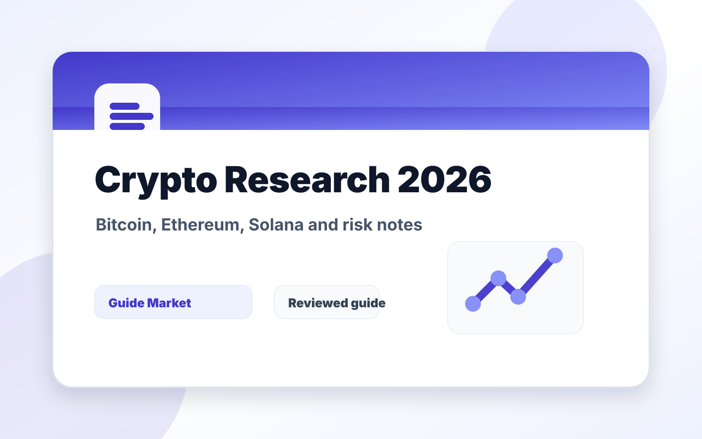
InvestingBest Cryptocurrencies to Research in 2026
major cryptocurrencies to research in 2026, including Bitcoin, Ethereum, Solana, Chainlink, stablecoins, risks, use cases, and portfolio questions.
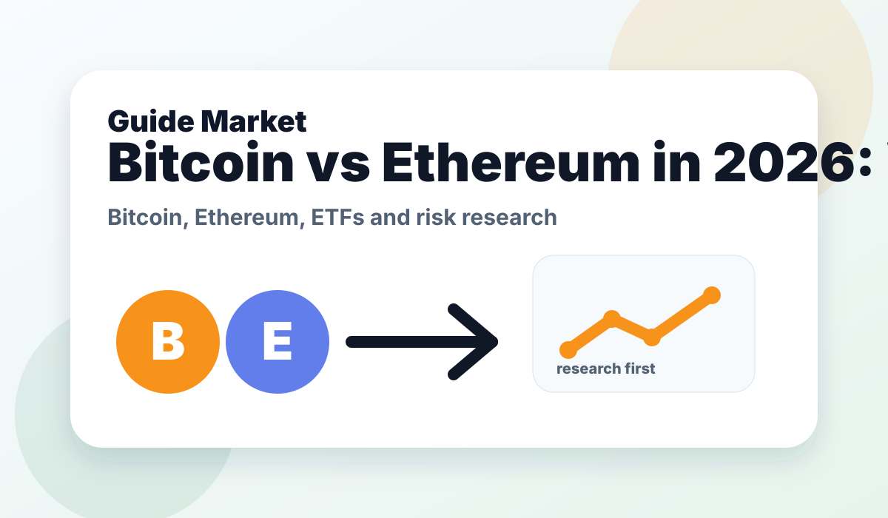
CryptoBitcoin vs Ethereum in 2026: Which One Should You Research First?
A practical comparison of Bitcoin and Ethereum in 2026, covering use cases, risks, ETFs, volatility, network value, and which asset fits different investor profiles.
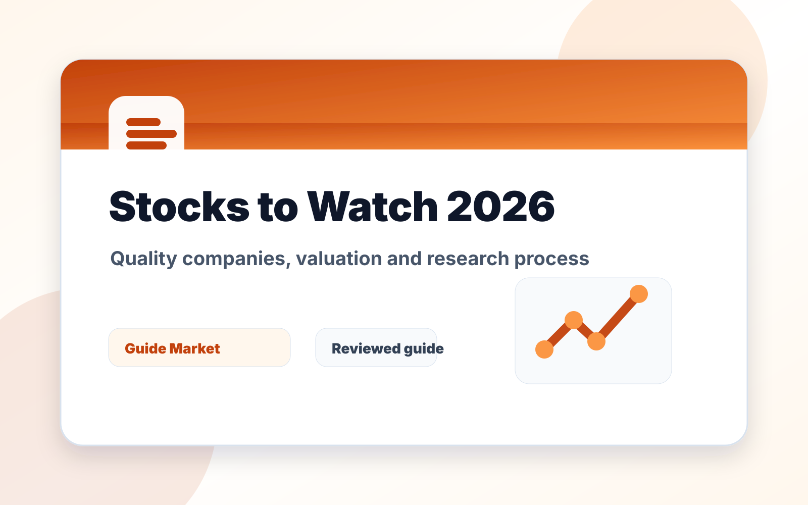
StocksBest Stocks to Watch in 2026: A Practical Research List
stock watchlist covering quality companies, AI leaders, consumer platforms, financials, healthcare, valuation risk, and how to research stocks responsibly.
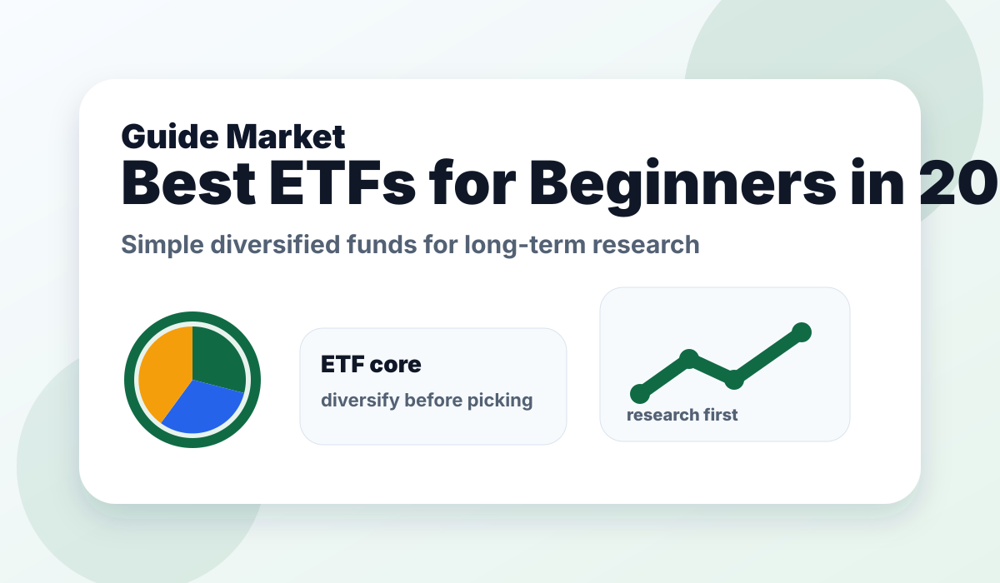
ETFsBest ETFs for Beginners in 2026: Simple Funds to Research First
A beginner-friendly 2026 ETF guide covering broad-market funds, international exposure, bonds, dividends, tech exposure, Bitcoin ETFs, fees, risk, and portfolio roles.
StocksBest AI Stocks to Watch in 2026
A practical research list of AI stocks to watch in 2026, covering chips, cloud platforms, software, semiconductor equipment, power infrastructure, valuation, and risks.
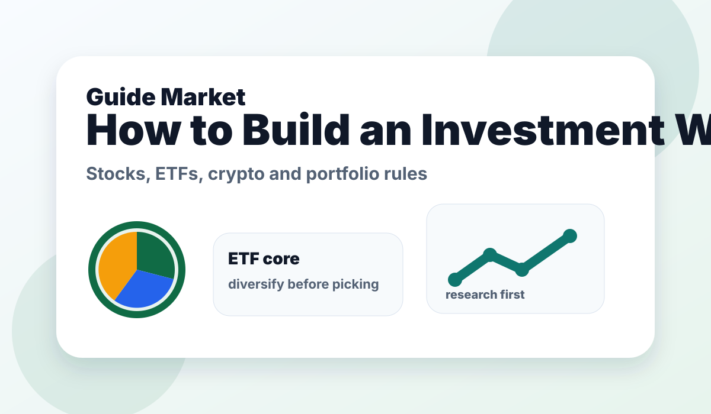
InvestingHow to Build an Investment Watchlist in 2026
A practical guide to building a 2026 investment watchlist across stocks, ETFs, crypto, bonds, cash, risk, valuation, research sources, and personal portfolio rules.
 Travel
TravelBest AI Tools for Travel Planning
Plan smarter trips without spending hours comparing tabs.
 Fitness
FitnessBest AI Tools for Gym Workouts
Build training plans that fit your body, time, equipment, and goals.
 Food
FoodBest AI Apps for Meal Planning
Turn meals into a repeatable system instead of a daily decision problem.
EducationBest AI Tools for Students
Study with more structure, better explanations, and fewer lost hours.
EducationBest AI Tools for Studying Faster
Combine active recall, summaries, and spaced repetition into a simple study workflow.
LearningBest AI Tools for Learning Languages
Practice a language every day with feedback, repetition, and real conversation.
 Money
MoneyBest AI Tools for Budgeting Money
Make money decisions easier by turning spending into visible patterns.
TravelBest AI Tools for Finding Cheap Flights
Find better flight options by comparing timing, flexibility, and alerts.
 Video
VideoBest AI Tools for Creating TikTok Videos
Move from idea to short-form video faster without losing creative control.
 Design
DesignBest AI Tools for Making Presentations
Build clearer decks with better structure, visuals, and narrative flow.
 Writing
WritingBest AI Tools for Writing Essays
Improve essay planning, drafting, editing, and clarity without outsourcing your thinking.
CareersBest AI Tools for Job Interviews
Practice interviews with realistic prompts, feedback, and stronger answers.
CareersBest AI Resume Builders
Create a resume that is clear for recruiters and easier for systems to parse.
BusinessBest AI Tools for Small Businesses
Run leaner operations by automating repetitive work and improving customer communication.
MarketingBest AI Tools for Social Media Content
Produce more consistent social content while keeping a recognizable brand voice.
BrandingBest AI Tools for Logo Design
Create a stronger first visual identity before investing in a full design system.
WebsitesBest AI Tools for Website Building
Launch better websites faster with no-code builders and AI-assisted structure.
ProductivityBest AI Tools for Productivity
Reduce friction in daily work by connecting notes, calendars, tasks, and decisions.
Daily AIBest AI Tools for Personal Assistants
Use voice and AI assistants to handle recurring tasks with less manual effort.
Daily AIBest AI Tools for Daily Life
Use AI as a practical everyday helper for planning, learning, writing, and decisions.
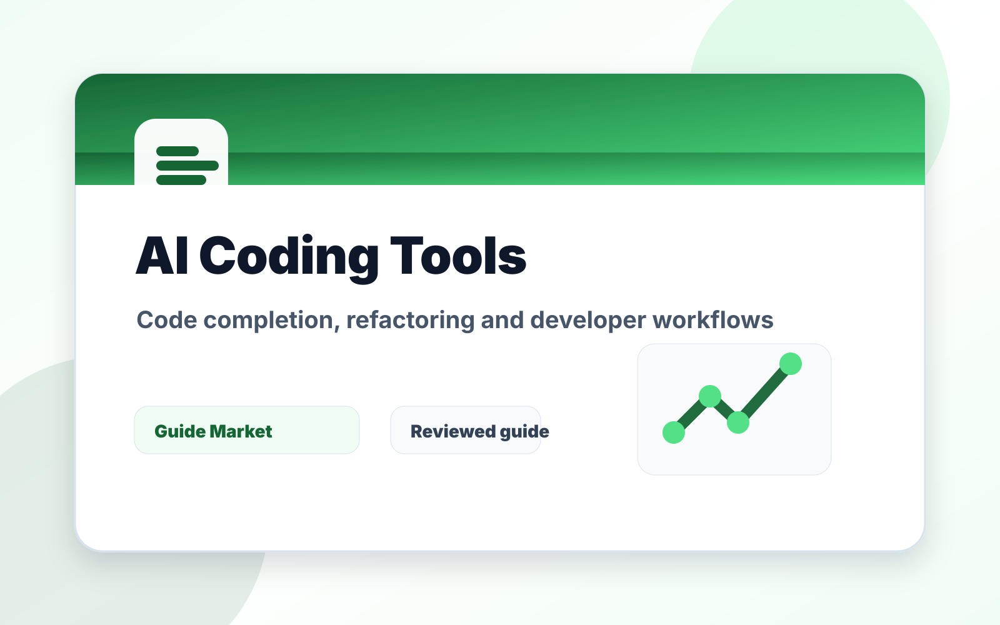
DevelopmentBest AI Coding Tools for Developers
Compare GitHub Copilot, Cursor, Replit, and Windsurf for code completion, debugging, refactoring, agents, and real developer workflows.
CreativeBest AI Image Generators
Compare Midjourney, Adobe Firefly, Leonardo AI, and Canva for social graphics, brand visuals, commercial images, and creative production.
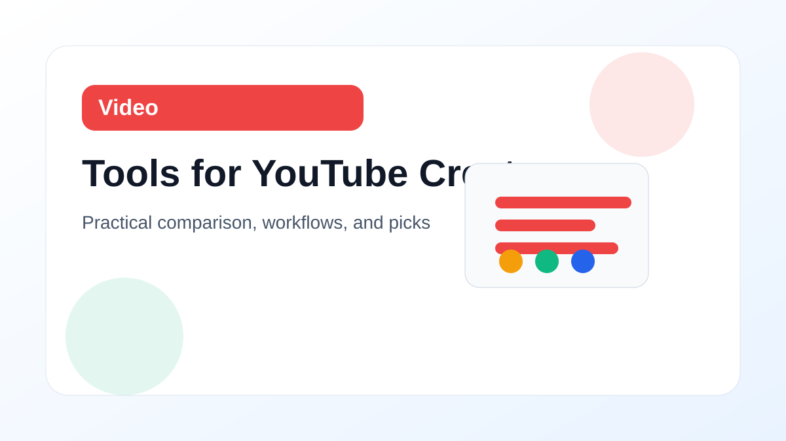
VideoBest AI Tools for YouTube Creators
Compare Descript, CapCut, TubeBuddy, and ChatGPT for YouTube scripts, editing, titles, thumbnails, chapters, and creator workflows.
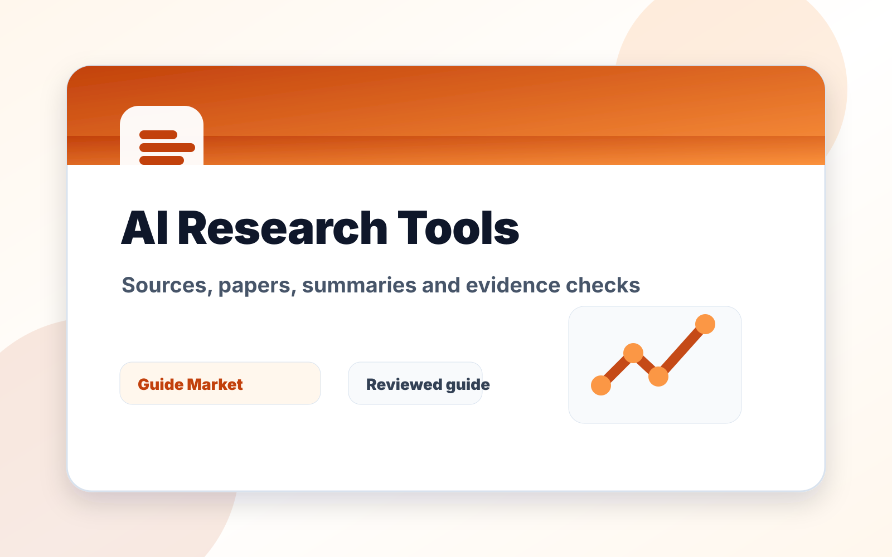
ResearchBest AI Research Tools
Compare Perplexity, Elicit, Consensus, and Semantic Scholar for research questions, paper discovery, source checking, and literature reviews.
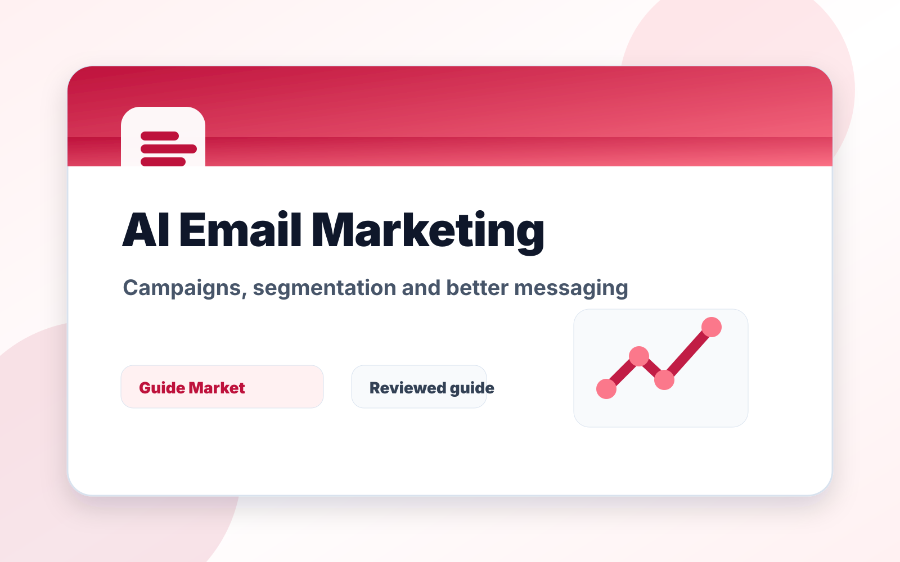
MarketingBest AI Email Marketing Tools
Compare Mailchimp, HubSpot, Jasper, and Copy.
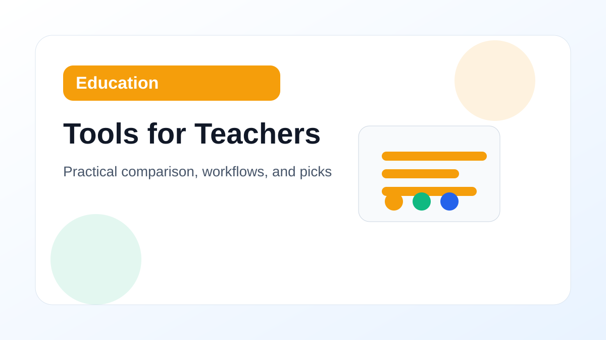
EducationBest AI Tools for Teachers
Compare MagicSchool AI, Khanmigo, Brisk Teaching, and ChatGPT for lesson planning, feedback, rubrics, differentiation, and classroom workflows.
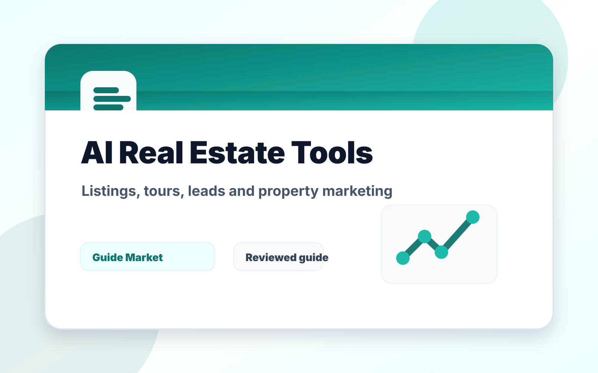
BusinessBest AI Tools for Real Estate Agents
Compare ChatGPT, Canva, Matterport, and Zillow tools for listings, property descriptions, virtual tours, lead follow-up, and real estate marketing.
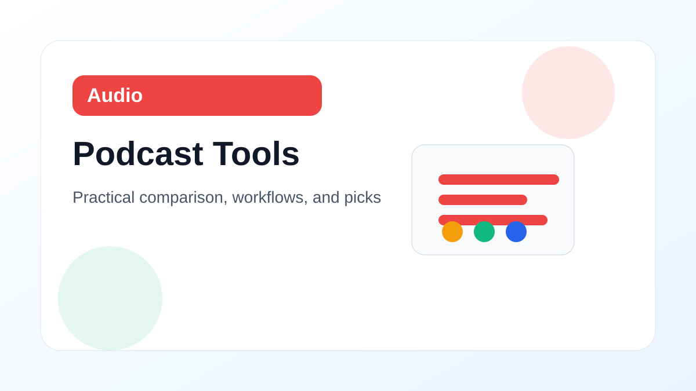
AudioBest AI Podcast Tools
Compare Descript, Adobe Podcast, Riverside, and ChatGPT for podcast recording, cleanup, transcripts, show notes, clips, and episode planning.
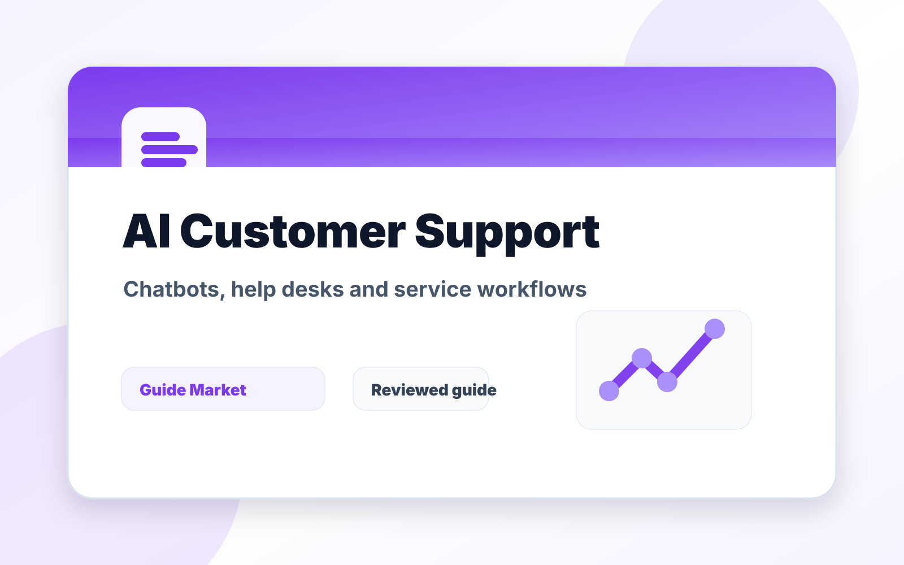
BusinessBest AI Customer Support Tools
Compare Intercom, Zendesk, Freshdesk, and Tidio for AI chatbots, help desks, support automation, live chat, and customer service workflows.
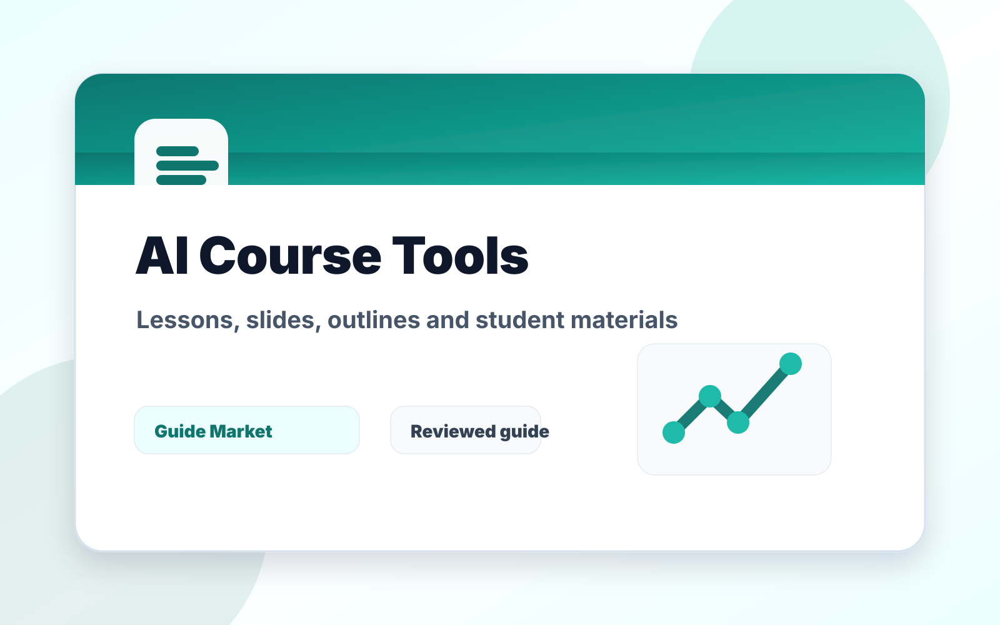
EducationBest AI Tools for Online Courses
Compare Thinkific, Teachable, Canva, and ChatGPT for course outlines, lesson planning, slide design, landing pages, and student learning materials.